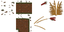

Le tutoriel

Le jeu Guyana-Dream était à l'origine destiné à illustrer un tutoriel mais tout ne s'est pas passé comme prévu.
Sebcap26 avait écrit le tutoriel Créer un mini-rpg en javascript avec canvas. Les sources sont disponibles sur Github.
Jamjam68140 a eu l'idée de lancer le topic [big-tuto] Créer un rpg avec html5 pour le pousuivre mais il n'a pas eu le temps de terminer.
Doudoulolita a repris un peu des deux codes pour faire son jeu, et essaie de le structurer et de le simplifier en vue de bien comprendre et de pouvoir peut-être faire le tuto elle-même. De l'aide serait cependant bienvenue !
La feuille de route
Révision totale du tuto
La feuille de route affichée ici se basera sur des tutoriels trouvés sur internet, en essayant de simplifier le code au maximum pour le rendre plus compréhensible.
Plan du tutoriel
Ce plan est susceptible de changer d'ici le rédaction complète du tutoriel.
Le tuto est actuellement partagé dans le courselab d'Openclassroom, mais est en cours de rédaction. Tous les commantaires sont les bienvenus
Partie 1 - La conception d'un mini-RPG
- Les éléments de base d’un RPG.
- Simplifier et trouver les graphismes
- HTML5 et la balise canvas
- Donner du style à la CSS : Voir essai 1-4
Partie 2 - Créer une carte du jeu
- Mettre de la couleur dans le canvas : Voir essai 2-1
- Afficher des images sur le canvas : Voir essai 2-2a et essai 2-2b
- Ajouter du texte : Voir essai 2-3
- Présentation du tileset : Voir essai 2-4
- Afficher une ligne de la carte : Voir essai 2-5
- Afficher la carte sur le canvas : Voir essai 2-6a etessai 2-6b.
Partie 3 - Animer un personnage
- Déplacer ume image : Voir essai 3-1a et essai 3-1b
- Déplacer avec le clavier : : Voir essai 3-2
- La spritesheet
- Afficher chacune des poses du personnage de la première ligne de la spritesheet à intervalles réguliers. Voir essai 3-3a.
- Animer le sprite
- Animation du sprite sans déplacement. Voir essai 3-3b
- Déplacement et animation d'un personnage à l'horizontal - Voir essai 3-4a
- Animation d'un personnage dans tous les sens (en passant aux autres lignes de la spritesheet)
- Animer le personnage dans le bon sens selon la touche pressée. Voir essai 3-4b d'après la vidéo Sprites et animation - Javascript par Computer Scientists
Partie 4 - Gérer les Collision
- Collision sur les bords. Voir essai 4-1.
- Ajouter un canvas. Voir essai 4-2a, essai 4-2b et essai 4-2c
- Collision avec une image
- collision du sprite avec une image affichée sur le canvas. Voir essai 4-3a.
- Collision du sprite avec une image affichée sur le canvas à plusieurs endroits. Voir essai 4-3b.
- Collision sur la carte
- Collision du sprite avec une tuile du tileset affichée sur la map : Voir essai 4-4a
- Utilisation d'un tableau pour stocker le numéro des tuiles et les coordonnées pour bloquer le personnage : Voir essai 4-4b
- Reprise de tout ce que l'on a appris sur un grand canvas : Voir essai 4-4c
Partie 5 - Donner un but au jeu
- Mettre des objets dans l'inventaire
- Supression d'un objet à attraper en cas de passage du personnage sur sa tuile. Voir essai 5-1
- Placement de cet objet dans un inventaire. Voir essai 5-2
- Chronométrer le jeu. Voir essai 5-3
- Comptabilisation du nombre d'objets attrapés et affichage du nombre. Voir essai 5-4
- Mettre un écran de fin. Voir essai 5-5a
- Indiquer si on a gagné ou perdu. Voir essai 5-5b
- Améliorer le décompte des objets. Voir essai 5-5c
Partie 6 - Encore plus de fun !
- Changer de carte
- Choisir l'emplacement (ex: bord du canvas) où se situera le changement de carte
- Changer la carte lorsque le personnage passe à cet endroit. Voir essai 6-1
- Prévoir un système de gestion des différentes cartes
- Rencontre avec un PNJ (personage non joueur)
- Dessiner un PNJ à un emplacement précis
- Déplacer et animer un PNJ sur une courte distance. Voir essai 6-2a
- Ne pas marcher sur les PNJ. Voir essai 6-2b
- Ajouter une bulle de dialogue quand le personnage rencontre le pnj. Voir essai 6-2c
- Choisir parmi 2 personnages
- Cliquer sur une des images des personnage pour afficher celui choisi. Voir essai 6-3a
- Pouvoir changer de perso en cours de jeu. Voir essai 6-3b
- Mettre les images des deux personnages de taille différente avec une vitesse et une endurance différente. Voir essai 6-3c
- Mettre les images des deux personnages sur un écran d'accueil avant de démarrer le jeu. Voir essai 6-3d
- L'un des persos étant plus grand que la taille d'une tuile (mais plus rapide), le petit pourra se glisser dans des ouvertures auxquelles l'autre n'aura pas accès. On aménage donc la carte et le score à atteindre
- Ajouter un ennemi et essayer de passer sans se faire prendre. Voir essai 6-4a
- Améliorer la carte et rendre le perso transparent quand il touche l'ennemi. Voir essai 6-4b
Certains décors et persos ont été modélisés avec Blender 2.74 (rendu toon via Freestyle) par Doudoulolita:
Pour aider à réaliser ce jeu et ce tutoriel, rendez-vous sur github ou sur le forum Zeste de Savoir.